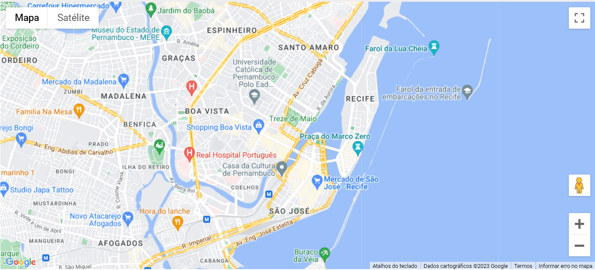

Passeios
Bairros de Santo Antônio e São José
A ilha de Santo Antônio é o coração do centro da cidade. Por ela passaram holandeses, portugueses, judeus, franceses, árabes e outros povos que deixaram suas marcas na paisagem, arquitetura e comércio popular. Pontuado de pátios, igrejas e casarões, o bairro possui uma grande concentração de construções barrocas e coloniais.
O bairro de São José é rico em detalhes, sons, cheiros e cenários. Repleto de ruas estreitas, becos, feiras e comércio popular, é uma festa para os sentidos e para os bolsos. Conhecido pela oferta de produtos no atacado e no varejo, pelas ruas do bairro se conhece um pouco do que é a essência do Recife.

Casa Forte – Apipucos – Poço da Panela
Seguindo as margens do Rio Capibaribe, antigas áreas de engenho e veraneio deram origem aos atuais bairros. Esbanjando elegância com ruas arborizadas, casarões imponentes do passado se misturam aos modernos edifícios e restaurantes. Jardins, praças, igrejas, colégios, museus e arruados integram um grande conjunto contínuo entre os bairros.
Em Casa Forte, mansões históricas abrigam lojas, restaurantes, instituições de ensino e cafés. Ao redor da Praça de Casa Forte, vale a pena uma caminhada para observar as construções e o paisagismo de Burle Marx. Bem perto da praça, está o Museu do Homem do Nordeste, com uma importante coleção dedicada á história e cultura da região. Integrado ao museu há um cinema com exibição de filmes de arte. Nas proximidades, o pequeno bairro do Poço da Panela possui ruas em pedra e charmosos casarões antigos que dão ar bucólico ao local. Há alguns ateliês e bares como a Venda de Seu Antônio e o Barchef. Seguindo para Apipucos, há um belo açude e a imperdível casa-museu da Fundação Gilberto Freyre, com acervo dedicado ao sociólogo e um belo bosque no quintal. Para esticar, basta ir ao Parque Estadual Dois Irmãos, que abriga uma reserva de Mata Atlântica e o zoológico local.

Madalena – Cordeiro – Várzea
Na Zona Oeste o grande destaque é o bairro da Várzea com seus museus e clima de cidade do interior. O bairro possui uma grande reserva de mata, casas térreas, casarões dos tempos dos engenhos, igrejas históricas, praças arborizadas, o campus da Universidade Federal de Pernambuco e dois importantes museus: a Oficina de Cerâmica Francisco Brennand e o Instituto Ricardo Brennand. O primeiro é o espaço do artista Francisco Brennand, que imprime em sua arte seres fantásticos e uma mitologia própria entre jardins, galpões e mata. O outro, é um castelo com uma enorme coleção de armas brancas, pinturas, esculturas e tapeçarias.
Reserve um dia para os dois, passando um turno em cada um. Nos arredores é possível verificar o movimento do bairro, da universidade ou ainda tentar uma partida de golfe no Caxangá Golf Clube. No bairro do Cordeiro, a Sala de Reboco oferece o melhor do forró pé-de-serra. Na Madalena, vale conhecer o Museu da Abolição, que funciona em um sobrado que já foi a casa-grande de um engenho e o Mercado da Madalena, famoso por seus bares que funcionam por toda a madrugada, alimentando aqueles que saem das noitadas e precisam de reforço antes de voltar pra casa. Bem próximo ao mercado, está o Clube Internacional, que promove animados shows, a Rua Benfica com seus elegantes solares e palacetes do período imperial e o estádio do Sport Club do Recife.

Ilha de Deus

Para saber mais sobre a Ilha de Deus, acesse: Passeios Ilha de Deus
Como Chegar
É fácil de chegar no Recife por todo lugar, terra, água e ar. Dispomos de um complexo portuário com terminal marítimo de passageiros, que recebe navios e cruzeiros. Por terra o Terminal Integrado de Passageiros (TIP) é o segundo maior do país e trabalha com um fluxo de aproximadamente 12 mil pessoas embarcando e desembarcando por dia. Por último, temos o Aeroporto Internacional dos Guararapes/Gilberto Freyre que recebe em média 5 milhões de turistas por ano e tem aproximadamente 31 destinos nacionais e 13 destinos internacionais conectados diretamente.
